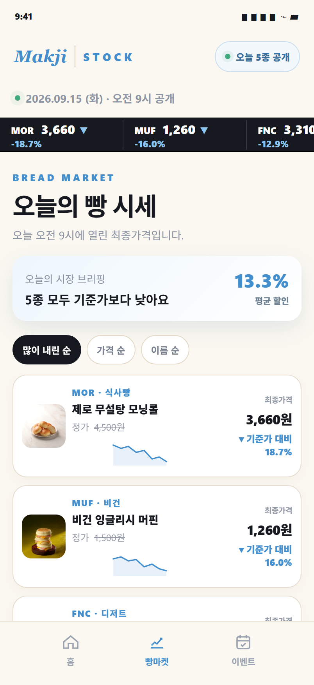
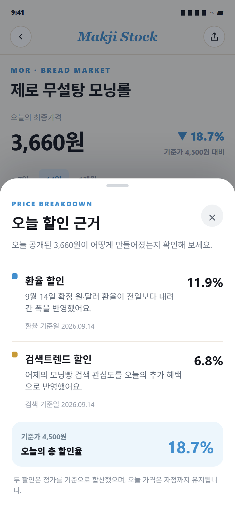

한눈에 비교해요
실제 상품 이미지와 정가, 최종가격, 기준가 대비 할인율, 미니 그래프를 한 행에서 비교합니다.
환율과 검색트렌드를 반영해 매일 달라지는 막지빵 가격. 정가와 최종가격을 비교하고, 최근 흐름과 오늘 할인 이유까지 확인해 보세요.

복잡한 금융 정보가 아니라 오늘 빵을 고르는 데 필요한 변화만 보여드립니다.
실제 상품 이미지와 정가, 최종가격, 기준가 대비 할인율, 미니 그래프를 한 행에서 비교합니다.
7일, 14일, 한 달 그래프로 오늘 가격이 최근 범위에서 어느 수준인지 판단합니다.
선택한 상품과 오늘 가격을 확인한 뒤 공식 자사몰에서 주문을 이어갑니다.

오늘 가격은 무작위 할인이 아닙니다. 확정된 원·달러 환율과 전날의 검색 관심도를 정해진 기준으로 반영합니다.